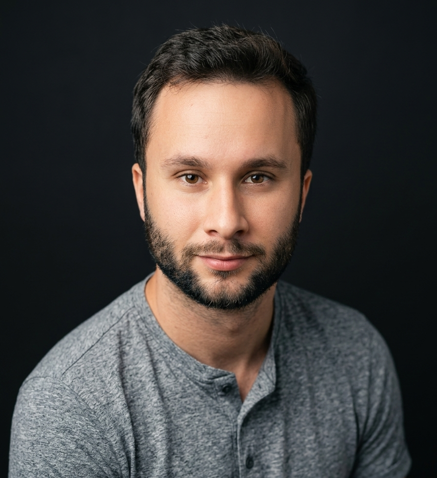

Você abre a loja e já tem quinze mensagens no WhatsApp esperando resposta.
Processos e tecnologia
Seu negócio pode andar sem você no balcão.
Sou Leonardo Mazzeu. Mostro como pequenos negócios organizam o jeito de fazer as coisas e usam a tecnologia que já está no celular. Em linguagem simples e sem precisar de time de TI.

O dia a dia
Você se reconhece em alguma dessas?
Situações que aparecem em quase todo pequeno negócio. Nenhuma delas é falta de esforço.
Preço, troca, desconto. Toda dúvida da equipe passa por você.
O cliente pergunta o preço e some. O orçamento fica sem ninguém voltar nele.
Você só descobre se o mês deu lucro quando o contador avisa.
Já pagou um sistema que ninguém da equipe usou.
Sabe que a IA existe, mas não sabe onde ela entra no seu negócio.
O problema quase nunca é a pessoa. Nem a falta de ferramenta.
Na maioria das vezes, o jeito de fazer ficou na cabeça de uma pessoa só. Quando ele está claro, a tecnologia ajuda de verdade. Quando não está, ela só deixa a bagunça mais rápida.
No que eu acredito
Primeiro o jeito de fazer. Depois a ferramenta.
Entender antes de instalar
Olho como o trabalho acontece de verdade no dia a dia. Só depois penso em ferramenta. Às vezes ela nem é necessária.
Simples, ou ninguém usa
Tecnologia boa é a que a equipe usa sem treinamento longo, direto no celular. Se precisa de manual grosso, está complicado demais.
Resultado em horas e em reais
Nada de promessa vaga de produtividade. O que importa é quanto tempo sobra para você e quanto sobra no caixa no fim do mês.
“Colocar tecnologia em cima de bagunça só faz a bagunça andar mais rápido.”
Quem sou eu
Tecnologia e negócio, juntos.
Sou formado em Análise e Desenvolvimento de Sistemas. Sempre gostei de fazer o computador e o celular trabalharem no lugar da gente.
Trabalhando com consultoria de negócios, entendi uma coisa: a maioria dos problemas que as empresas tentam resolver com tecnologia não são de tecnologia. São do jeito de fazer, de como o trabalho está organizado.
Hoje sou consultor no Instituto JB, em Paraguaçu, Minas Gerais, e cuido da frente de tecnologia. É onde essas ideias saem do papel e entram na rotina de negócios reais.
No Instagram, mostro o que estudo e monto na semana, com problemas comuns de pequenos negócios e como a tecnologia resolve. Tudo sem dicionário de TI.
Tecnologia
Formação em ADS e automação na prática. WhatsApp, planilhas, sistemas conversando entre si e IA aplicada a uma dor concreta.
Negócios
Vivência em consultoria, com o jeito de fazer como método. Entender a rotina antes de sugerir qualquer coisa.
Aprendizado em público
Conteúdo curto, pensado para ler no celular entre um cliente e outro. @leonardomazzeu no Instagram
Contato
Vamos conversar?
Me conta como está o dia a dia do seu negócio. Não precisa ter nada organizado antes. A conversa serve justamente para entender o que está travando.